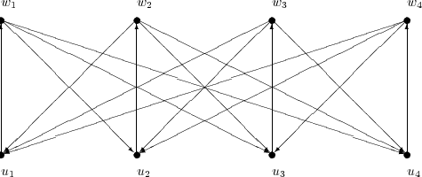

Due: Friday, March 20, 2015.
Penalty for late homeworks: 10% for each day or part of a day.
Given n ≥ 3 objects, we want to find an ordering (or permutation) of the objects, so, given two objects i and j, either i is before j or j is before i. We can model the set of orderings by introducing variables xij for 1 ≤ i,j ≤ n defined as follows:
The set of feasible solutions can be written as
The inequalities are called triangle inequalities. You may assume that the dimension of PLOn is n(n - 1)∕2.
Prove that Tx ≤ b is a facet defining inequality for PLOn+1.
|
| (1) |
is valid for PLOn. Find a point n(n-1), 0 ≤ij ≤ 1, which satisfies ij + ji = 1 for 1 ≤ i,j ≤ n and all the triangle inequalities, but which violates (1) with k = 3. (Note that the inequality includes k edges pointing up in the picture and k(k - 1) = k2 - k edges pointing down.)

| John Mitchell |
| Amos Eaton 325 |
| x6915. |
| mitchj at rpi dot edu |
| Office hours: Tuesday, Wednesday, 2–4pm. |